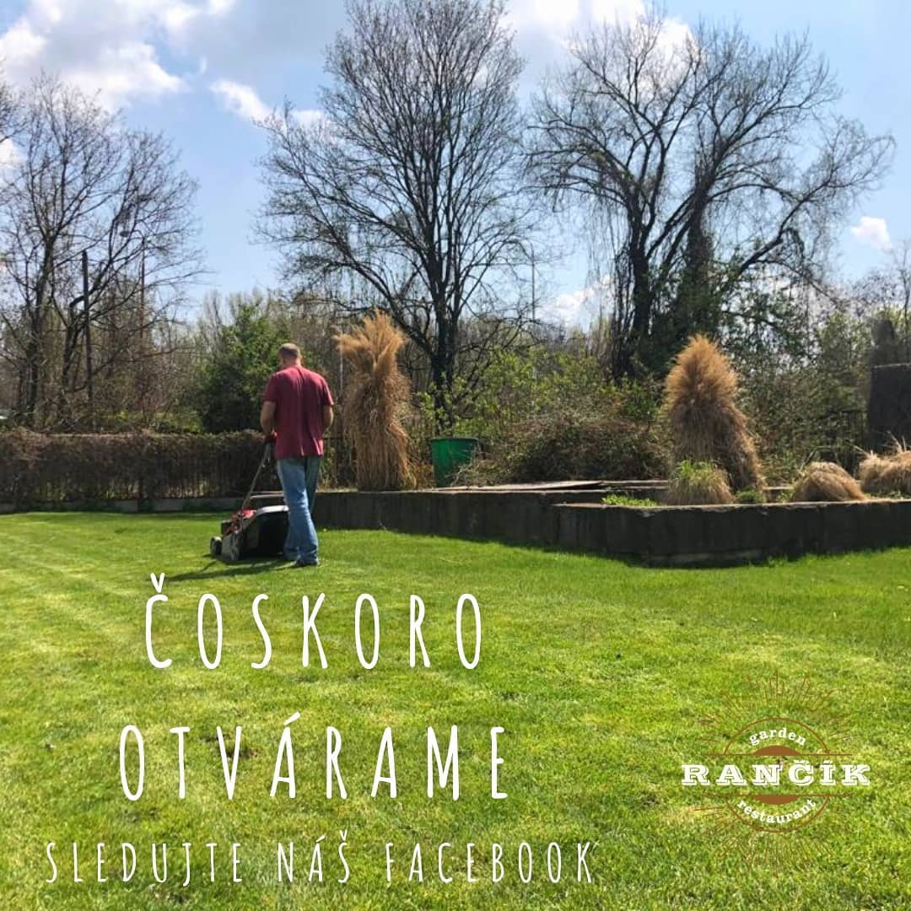

Polievky 🍲 podľa @rancik_restauracia — Normy Jedál
Kosíme, čistíme, luxujeme aby sme sa opäť stretli v našej záhradnej reštaurácii ✅.
Už len aby nám to stretnutie čo najskôr povolili 🙂.
#jedlo #rancik #mnam #chutnejedlo #zdravojem #jedlobratisalva #laska #restaurant #restauracia #menu #gardenrestaurant #food #bratislava #petrzalka #delicious #foodlover #drinks #tasty #jedlo #jedlovnoci #bratislava #jedlovblave #hlad #polievky #zahradnarestauracia